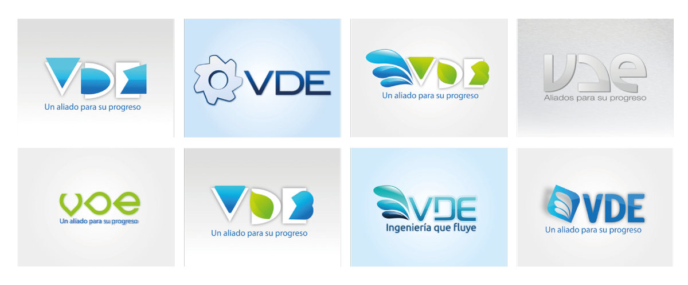
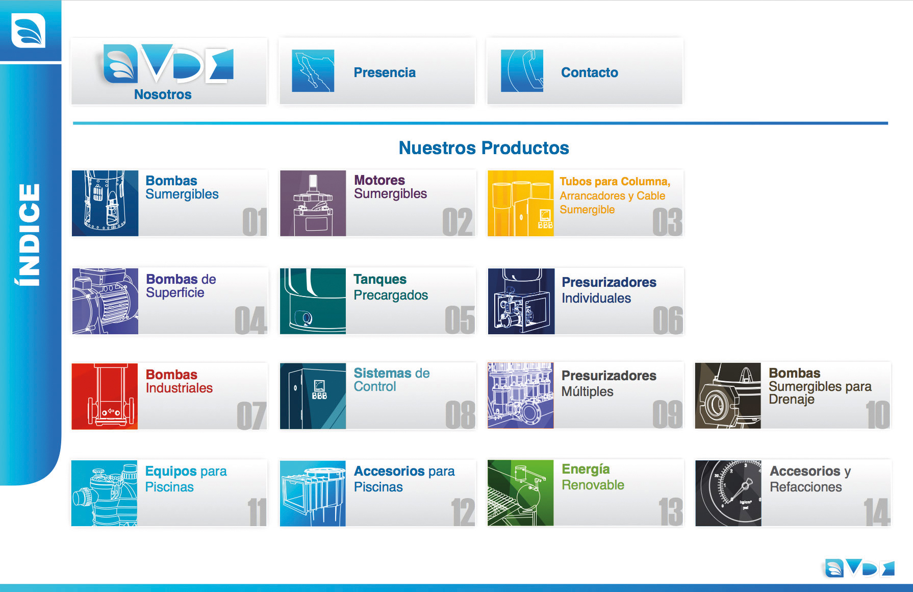
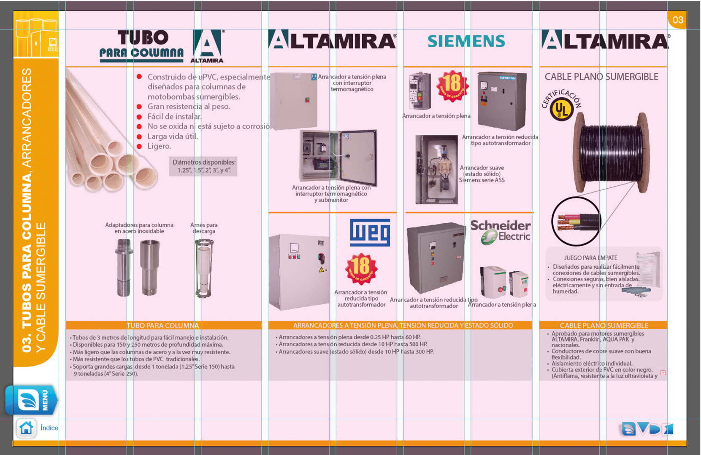
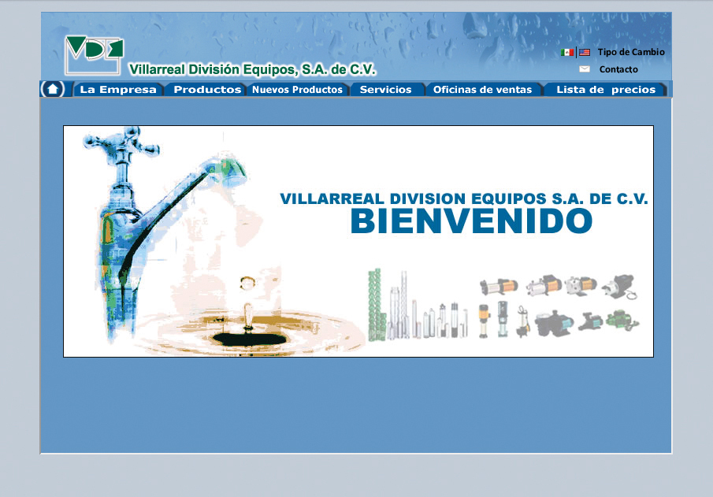

Informe
de Prácticas profesionales
Video
Aquí va el video que habla sobre mi trabajo
Villarreal División Equipos, S.A. de C.V.
Periodo: febrero 2012 a diciembre 2013
Objetivos generales
- Rediseñar la identidad corporativa
- Rediseñar la página web
Objetivos específicos
- Rediseñar el newsletter
- Diseñar un brochure interactivo
- Diseñar fichas técnicas de los productos
Análisis de la competencia
Principales competidores, identificando sus puntos fuertes y también los débiles, para obtener puntos de referencia que me serían bastante útiles para mi proceso creativo.

Análisis de la marca:
- Color: Azul marino
- Pictograma: Tortillo de Arquímedes
Análisis de la marca:
- Colores: azul y gris
- Pictograma: bomba caracol
Análisis de la marca:
- Colores: naranja y negro
La marca
El color verde se suele asociar con la naturaleza y es ideal para promocionar productos de jardinería, actividades al aire libre, productos o servicios de la salud o productos ecológicos, pero no para productos relacionados con el agua.
Propuestas a color
Cosntrucción de la marca
Aplicaciones corporativas
Newsletter
Brochure
Colores
Retícula
Fichas técnicas
Página web
Background Transitions
Different background transitions are available via the backgroundTransition option. This one's called "zoom".
Reveal.configure({ backgroundTransition: 'zoom' })Background Transitions
You can override background transitions per-slide.
<section data-background-transition="zoom">Pretty Code
function linkify( selector ) {
if( supports3DTransforms ) {
var nodes = document.querySelectorAll( selector );
for( var i = 0, len = nodes.length; i < len; i++ ) {
var node = nodes[i];
if( !node.className ) {
node.className += ' roll';
}
}
}
}
Code syntax highlighting courtesy of highlight.js.
Marvelous List
- No order here
- Or here
- Or here
- Or here
Fantastic Ordered List
- One is smaller than...
- Two is smaller than...
- Three!
Tabular Tables
| Item | Value | Quantity |
|---|---|---|
| Apples | $1 | 7 |
| Lemonade | $2 | 18 |
| Bread | $3 | 2 |
Clever Quotes
These guys come in two forms, inline:
“The nice thing about standards is that there are so many to choose from”
and block:
“For years there has been a theory that millions of monkeys typing at random on millions of typewriters would reproduce the entire works of Shakespeare. The Internet has proven this theory to be untrue.”
Intergalactic Interconnections
You can link between slides internally, like this.
Speaker View
There's a speaker view. It includes a timer, preview of the upcoming slide as well as your speaker notes.
Press the S key to try it out.
Export to PDF
Presentations can be exported to PDF, here's an example:
Global State
Set data-state="something" on a slide and "something" will be added as a class to the document element when the slide is open. This lets you apply broader style changes, like switching the page background.
State Events
Additionally custom events can be triggered on a per slide basis by binding to the data-state name.
Reveal.addEventListener( 'customevent', function() {
console.log( '"customevent" has fired' );
} );
Take a Moment
Press B or . on your keyboard to pause the presentation. This is helpful when you're on stage and want to take distracting slides off the screen.
Much more
- Right-to-left support
- Extensive JavaScript API
- Auto-progression
- Parallax backgrounds
- Custom keyboard bindings